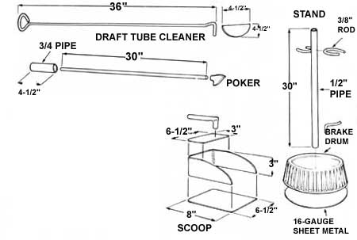
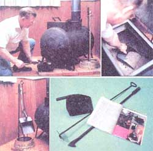

In the last issue of this magazine (see "The Amazing $500 Wood-Burning Stove ... That You Can Build for $35 [or Less!]" in MOTHER NO. 49), we described a really nifty wood-burner that a fellow named Bob Smyers showed us how to construct from an old electric water heater tank.
Well, as some of you good folks know, the first couple of hundred MOTHER readers who ordered those plans had to wait a few weeks to get them. And one of the main reasons we didn't have those drawings ready to mail as rapidly as we'd originally hoped ... is because we kept adding "extra" ideas and information to them. Things like complete instructions for the following accessories that we've designed expressly for this particular stove.
You just can't beat this compact scoop for shoveling the ashes out of the main body of MOTHER's water tank stove. It's fabricated from three pieces of 14-gauge sheet iron (see drawing for dimensions) and its handle is an 7"-long section of 1/2" pipe. You can cut out the sheet metal bottom, sides, and top with a torch and then file 'em smooth it you must ... but you'll do a far neater job if you slice 'em out with a metal-cutting saber saw. Bend the flat metal and pipe handle as shown and weld the scoop together.
One of the secrets of the high efficiency of MOTHER's stove is the draft tube that's built into the burner's combustion chamber. That's the good part. The bad part is that a certain small amount of ashes can sift into the tube during the stove's use.
No problem. Not if you have one of these handy draft tube cleaners made from a 42"-long length of 3/8" steel rod. Heat the rod until it's dull red on one end and bend in a triangular handle as shown below. Next heat the other end and bend on an "L" that's no more than 2" long. Then shape a piece of 14-gauge sheet iron into a half circle (with a diameter slightly less than the inside diameter of your stove's draft tube) ... and weld the blade to the "L" with its straight side to the inside of the angle.
Shape a piece of flat steel into the arrowhead shape shown here and weld it to one end of a 1/2 " or 5/8 " steel rod that's 30 inches long. Slip a 4-1/2"-long piece of 3/4" pipe over the other end of the rod, flatten it with a hammer until it fits tight, and weld it in place.
Cut the front out of a brake drum salvaged from a junked vehicle. Then weld a 30" length of 1/2" pipe to the drum as shown. Add a small loop of iron or steel rod to each side of the pipe near its top and a hook to its middle. Then weld a piece of sheet metal across the stand's bottom.
|
 |
 |
|